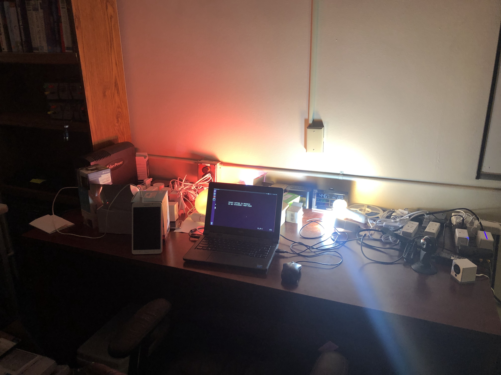
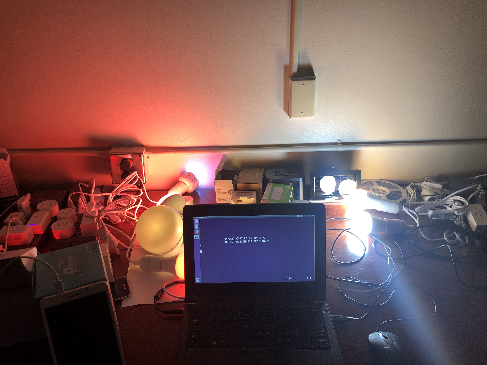

About |
| | Research |
| | Publications |
| | Contact |
Join NetML Lab
NetML Lab welcomes motivated students interested in artificial intelligence for cybersecurity, including machine learning, deep learning, and large language model–based approaches. Our work emphasizes optimization-driven dimensionality reduction, network traffic intelligence, and interpretable AI for security analytics.
Students in the lab engage in hands-on research involving search-based model refinement, security telemetry analysis, and experimental validation across real-world datasets. Active participation in research and publication is expected.
Applicants should have solid programming skills (Python preferred), strong analytical thinking, and a genuine interest in AI-driven cybersecurity research.
Our research has been featured in:
Chameleon Cloud Research Blog
Cybersecurity Guide Podcast
To apply, email your CV and a brief statement of research interests to aksoy {at} ucmo.edu.
Director:
Ahmet Aksoy, Ph.D.Associate Professoraksoy {at} ucmo.edu |
Current Students:
Jasurbek Ilkhombekovich IbragimovContext-Constrained Optimization of Large Language Models for Cybersecurityjxi80040 {at} ucmo.edu |
||
Yaman ShresthaLeveraging Large Language Models for Efficient Incident Classification in Cybersecurityyxs33220 {at} ucmo.edu |
||
Khursaid AnsariLeveraging Large Language Models for Efficient Incident Classification in Cybersecuritykxa45490 {at} ucmo.edu |
||
Mayank DemblaAI-Driven User Behavior Fingerprinting for Enhanced Security and Threat Detectionmxd08640 {at} ucmo.edu |
||
Joshua Kiran YajjalaAI-Driven User Behavior Fingerprinting for Enhanced Security and Threat Detectionjxy55130 {at} ucmo.edu |
Previous Students:
Sundeep VarmaComparative Analysis of Feature Selection Algorithms for Automated IoT Device Fingerprintingsxv54730 {at} ucmo.edu |
||
Luis ValleAutomated Network Incident Identification through Genetic Algorithm-Driven Feature Selectionlev33910 {at} ucmo.edu |
||
Sachin RanaAutomated Fast-flux Detection using Machine Learning and Genetic Algorithmssxr53490 {at} ucmo.edu |
||
Emiline StewartNetwork Traffic Fingerprinting using Artificial Bee Colony Algorithmers10570 {at} ucmo.edu |
||
Enya PanComparative Analysis of Feature Selection Algorithms for Automated IoT Device Fingerprintingexp99350 {at} ucmo.edu |
||
Sharwin ReddyNetwork Traffic Fingerprinting using Ant Colony Algorithmsxp32460 {at} ucmo.edu |
Lab:
|
 |
 |